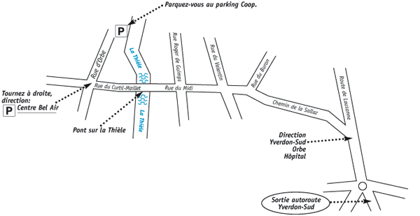

Je pratique la chromopuncture depuis 8 ans, et je suis émerveillée de l’efficacité des couleurs, des découvertes qu’elles nous font faire, des chemins qu’elles nous font prendre…
Je me réjouis de vous faire découvrir la puissance bénéfique des couleurs pour votre santé et votre bien-être.
Aude Aquoise
Consultations sur rendez-vous
 A Yverdon
A Yverdon
Mercredi, jeudi et vendredi
Rue d’Orbe 17
079 / 413 47 21
024 / 426 72 72

Lorsque vous sortez du parking, prenez l’ascenseur jusqu’au Rez Supérieur
et sortez du centre commercial en passant devant le kiosque à votre gauche.
Vous vous trouvez maintenant sur la terrasse du restaurant Coop.
Tournez à droite et prenez le petit chemin qui longe la Thièle.
Elle est à votre gauche et les maisons rouges et blanches à votre droite.
Mon cabinet se trouve dans la dernière de ces maisons
et il est signalé sur ma boîte aux lettres.
Au cas où vous auriez de la peine à monter les escaliers,
je viens volontiers vous chercher en ascenseur si vous me prévenez.
PAS A PAS DEPUIS LA GARE
En sortant de la gare d'Yverdon, vous allez traverser le grand parking en vous dirigeant tout droit.
Vous traverserez ensuite la Rue des Remparts et prendrez à droite.
Vous arriverez à un pont sur la Thièle
que vous passerez.
Maintenant vous vous trouvez sur une grande place, la place Bel-Air et devant vous
il y a un centre commercial avec Coop et Mac Donald.
Vous passez à gauche, le long du cinéma, et traversez
la terrasse du restaurant.
Vous vous trouvez maintenant sur le petit chemin qui longe la rivière;
elle est à votre gauche et les maisons à façades rouges et blanches à votre droite.
Mon cabinet se trouve dans la dernière de ces maisons et il est signalé sur ma boîte aux lettres.